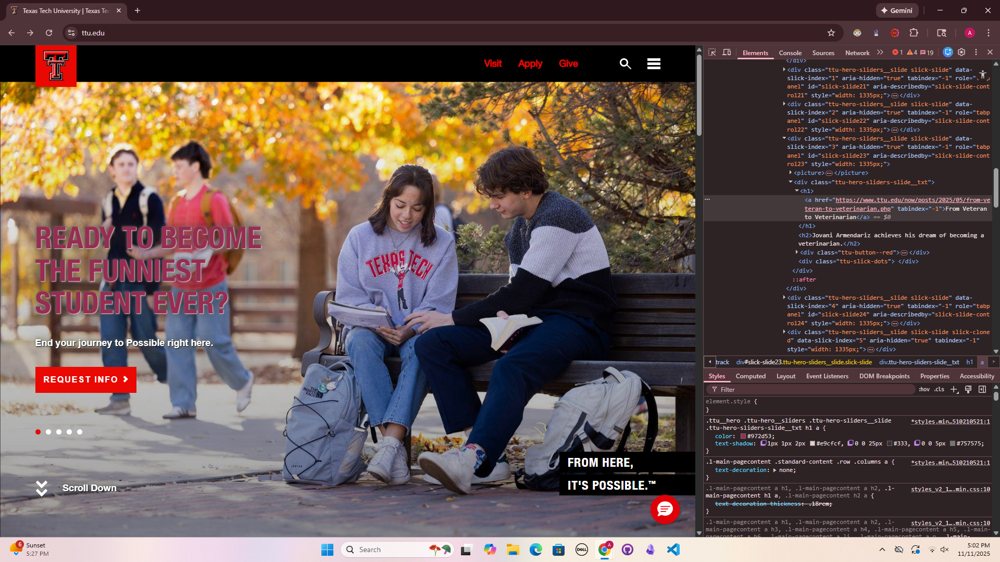

My Dev Tools Vandalism
I used browser developer tools to temporarily "vandalize" a website. Below is a screenshot showing my changes. These edits only appeared on my computer and did not affect the actual website.

What I "Vandalized- TTU Edition"
I changed the main headline from "Ready to become a Red Raider?" to "Ready to become the Funniest Student Ever?" I also changed the subheading from "Start your journey to Possible right here." to "End your journey to Possible right here.". For Styles, I made two changes. Firstly, I changed the main heading color from white to a pretty magenta. I also added a text shadow, changing the text shadow of the main heading from black, to a light pink.
- I chose the changes that I did because I wanted to see how much of a change my little tweaks could add to the website. It made a huge difference, and made me realize how important editing is. I was able to understand how HTML and CSS interlink through changes I made. I do have a better sense of how dev tools can be used while crafting my own webpages.